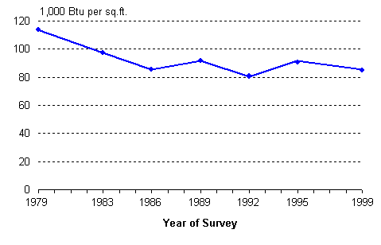
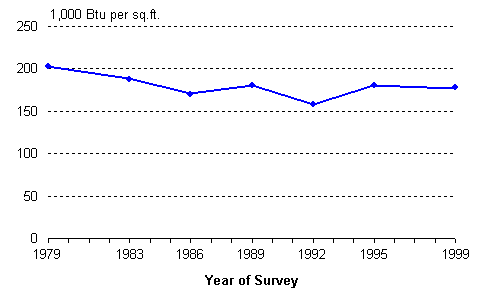
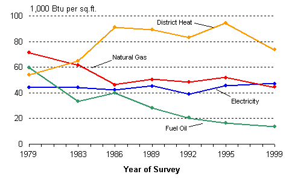
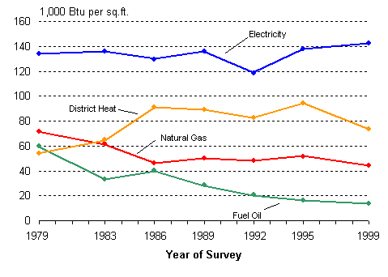

|
Part 1. Energy Consumption Data Tables
Background: Site and Primary Energy |
Trends in Energy Consumption and Energy Sources Part 2. Energy Intensity The intensity of energy use is another indicator of energy use besides energy consumption. Energy intensity is the amount of energy consumed per unit of service or activity; for example, energy consumption per square foot, consumption per worker, or consumption per hour of operation. In this section, intensity is expressed as energy consumption per square foot of floorspace. For energy source-specific intensity (e.g., natural gas intensity), the floorspace component refers to floorspace of buildings that used the energy source. Total Energy Intensity Total site energy intensity declined from 1979 to 1986, then remained unchanged from 1986 to 1999 (Figure 5). In contrast, the decline of total primary energy intensity was statistically significant only between 1979 and 1992 (Figure 6 and graph detail). The smaller primary intensity decline is explained by the relatively larger component of primary electricity—the electricity trend remained flat across the period and offset the decline of other energy intensities (see next section). | |||||
Site energy intensity declined between 1979 and 1986 then was unchanged to 1999. |
Figure 5. Site Energy Intensity, 1979 to 1999

Energy Information Administration Commercial Buildings Energy Consumption Survey Graph detail and data table | |||||
Primary energy intensity declined between 1979 and 1992. |
Figure 6. Primary Energy Intensity, 1979 to 1999

Energy Information Administration Commercial Buildings Energy Consumption Survey Graph detail and data table Intensity by Energy Source The intensities of the major energy sources differed from each other (Figure 7). Intensities of two of the energy sources declined—natural gas intensity declined from 1979 to 1986, then remained flat to 1999, while fuel oil intensity declined across the entire period. Both site electricity and primary electricity intensity were unchanged across the entire period (Figure 7 and Figure 8). Site electricity intensity was comparable with the other major sources while primary electricity was significantly greater than any of the others (Figure 8). District heat intensity appeared to increase from 1979 to 1995 but the increase was not statistically significant (district heat detail). | |||||
Natural gas and fuel oil intensity declined while site electricity and district heat intensity did not show statistically significant change. |
Figure 7. Site Energy Intensity by Source, 1979 to 1999

Energy Information Administration Commercial Buildings Energy Consumption Survey Graph detail and data tables: Site electricity Natural gas Fuel oil District heat | |||||
Primary electricity intensity remained unchanged and exceeded the intensities of the other major energy sources. |
Figure 8. Primary Energy Intensity by Source, 1979 to 1999

Energy Information Administration Commercial Buildings Energy Consumption Survey Graph detail and data tables: Primary electricity Natural gas Fuel oil District heat Top Back to “Part 1. Energy Consumption” Return to “Trends Introduction” Specific questions may be directed to: Alan Swenson alan.swenson@eia.doe.gov
Release date: 01/12/2000 If you are having any technical problems with this site, please contact the EIA webmaster at wmaster@eia.doe.gov.
|